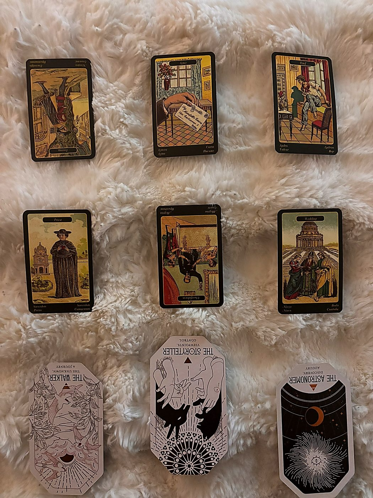
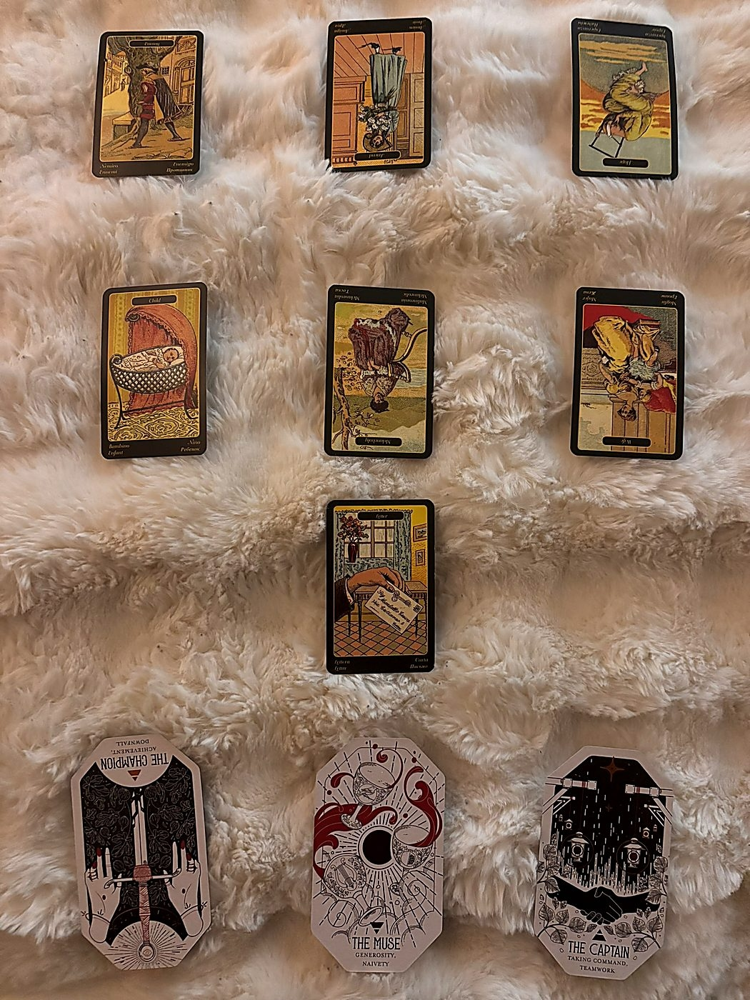

Bookmark this link — it updates when the next one goes up. There’s always another week.
Readings by Jaylon
This week I did something I’ve been working up to for a while: I pulled cards on someone who isn’t me. A man from my life. I’m not going to name him, but if you know my situation, you’ll probably recognize him by the time we hit Position 3. If you don’t know my situation, the cards will introduce him properly and you can form your own theory.
I ran two back-to-back readings. First: The Mirror — a nine-card psychological profile that maps who he actually is as a person, independent of anything between us. Then: The Thread — a ten-card connection reading that looks at what’s actually happening between us, underneath the surface. I also did my week-ahead, which is linked below if you want the full read. Let me give you the quick version of the week first before we get into the main event.
Frivolity showed up at the bottom of my Sibilla deck, which means it’s the spirit-level energy running underneath the whole week without announcing itself. What Frivolity actually does in this system is reduce the weight of everything around it — it’s the deck telling me “don’t be so heavy about this.” The rest of the week has reunion energy, some blocked hope and joy, but it lands on Surprise and Consolation in synthesis. Lighter week. After the one before it, I’ll take it.
Read the full weekOkay. Now. Separate from my week — there’s a man. He’s not a minor character in my life right now, which is why I pulled cards on him. He’s from work, and I’ll leave it at that. Some of you already know who I mean. Others will figure it out from the reading, and that’s part of the fun. The cards don’t care about names. They’ll tell you who he is regardless.
I want to be clear: I don’t have full certainty about which person in my life every card is pointing to. I have a theory. The reading either confirms it or complicates it. Either way, I’m publishing it because the cards said what they said, and sitting on a reading that’s this interesting felt like a waste.

Quick note on the decks: The first six positions use the Sibilla della Zingara, a 52-card Italian oracle. Think of it as Tarot’s more blunt, story-obsessed Italian cousin — it names things plainly (there’s literally a card called “Enemy”). Reversals soften negatives and complicate positives, but nothing is erased. The last three use the Citadel Oracle — soul-level archetypes with four suits. Reversed there means shadow or excess, not negation. Both energies present, one just louder.
He leads with friction. That’s the first thing. The Enemy card in the Sibilla is specifically a male adversary — someone who carries falsehood and obstruction, who acts against you directly or not. As a reversed card in the Mask position, the edge is performed more than it’s real. He wants to be read as formidable, as someone you shouldn’t test. The reversal says: that persona is softening, or was never as solid as it looked.
He leads with “don’t mess with me.” But the reversal says that’s a costume coming apart at the seams. Keep this in mind when you see what’s underneath it.
Underneath the Enemy mask: the Letter. In the Sibilla, Letter names awaited news, deliberate communication, change arriving in written form. At his core, this man is a communicator. Not loud — composed, reaching, someone whose authentic self lives in what he transmits. He’s, fundamentally, someone who wants to be received the way a letter wants to arrive.
The gap between Position 1 and Position 2 is the whole story. He leads with distance and he is made of the need to connect. He pushes people away with one hand and writes them letters with the other. The rest of this reading will tell us why.
Okay. The Thief upright is a deception card — someone who plots behind your back, takes what isn’t theirs, operates in the shadows of a situation. As a pattern, this lands uncomfortably. His recurring move is taking something that wasn’t offered. Not necessarily literally. Relationally: he takes intimacy that hasn’t been given freely, trust he hasn’t earned, access he hasn’t been extended. He repositions himself as though it was always his.
There’s always another track running underneath his visible behavior. People around him sense it without being able to name it — that persistent feeling that something isn’t being said, that there’s a hand in a drawer they can’t see. His pattern is covert acquisition. In Tarot terms: the Seven of Swords not as a single act but as a mode of being.
The Priest upright names spiritual authority, ritual, devotion — sacred order. As a wound, this means the framework of meaning itself is where the damage lives. Someone, or some system, claimed to be righteous, morally unimpeachable, the holder of truth — and used that position to harm. The wound is betrayal by something that should have been trustworthy.
Watch how it connects to the Thief. The Thief is what someone builds when they’ve learned that power takes from you in the dark and calls it sacred. If the wound is the Priest, the stealing becomes survival logic: take before you can be taken from. Operate in shadows because the people who operate openly are the liars. Every covert move he makes is, at some level, a response to that original violation.
Cheerfulness upright is one of the warmest Sibilla cards: social life, celebration, the room full of people genuinely glad to see you. Reversed, it becomes forced social performance — the appearance of celebration without warmth underneath. What he desires is belonging he can’t quite access. He wants the warmth. He wants the room where people are actually happy he’s there. But the reversal says he can only reach for the performed version because the genuine version is what the Priest wound corrupted.
The causal chain is painful: the wound teaches him that authentic sacred community betrays you. So now he wants belonging but only knows how to reach for the counterfeit version. Then he wonders why it never fills him up. Three of Cups reversed as a life goal — forever chasing the feeling of communion while the method guarantees he’ll only get the shallow version.
Wedding upright is union, commitment, genuine covenant — the moment you stand in front of something and say I am choosing this. In the Blind Spot position, this card says: everyone around him can see his capacity for real commitment, and he walks past it every single time like it’s invisible. The answer to his longing is already in the room. He’s the only one who can’t see it.
The upright orientation matters. This isn’t a strained or broken thing. It’s a genuinely good capacity, fully present, sitting in the one place he can’t look. The tragedy is that the thing the Cheerfulness reversed is chasing is available to him. He just keeps looking everywhere else.
All three of his Oracle cards came in reversed. That’s significant — every layer of his deeper self is currently running in shadow expression. The gifts are real but distorted. The call is genuine but being refused.
The Walker’s gift is steady forward progress — the ability to keep going, to put one foot in front of the other, to embody the journey as its own destination. When he’s in his power, his forward motion is a gift to everyone around him. But reversed, the guidebook names it precisely: “something keeps making you look back to the past.” His gift has become its own trap. He’s endlessly walking but never arriving.
The Core told us he’s a Letter — someone defined by transmission in motion. Now the Oracle says his highest gift is also motion. His deepest nature is communication-while-moving. But the reversal says the motion has stalled because something unresolved demands his attention before he can genuinely go anywhere. His gift is the ability to walk into what’s next. But the past has its hand on his shoulder.
Upright, the Storyteller weaves meaning from experience — turns chaos into something comprehensible. Reversed as shadow, the guidebook warns of someone telling a tale “with more embellishments than there should be.” As the shadow he’s living, this means Elias is telling stories about himself that aren’t accurate. The embellishments have grown so thick that even he can’t find the truth underneath them.
He’s constructed a narrative about who he is and why he does what he does — and that story is the single biggest thing keeping him stuck. The Walker can’t walk forward because the Storyteller keeps rewriting the map. The person he’s manipulating through narrative is himself.
The Astronomer maps patterns that only become visible when you zoom out far enough. Reversed, the guidebook says: “you have zoomed out too far and lost contact with the immediate reality that needs to be addressed.” As the Invitation being resisted — when the Invitation is reversed, the soul is knocking and this person is pretending they’re not home.
His soul is calling him to genuine perspective, the kind that would let him see his own patterns clearly. He’s resisting it by hiding in a false version of that same perspective. He tells himself he already sees the big picture. What he’s actually doing is using the view from the tower to avoid being present with the mess on the ground floor. The Astronomer upright doesn’t flee life — they make it navigable. He’s being asked to come down and engage. He’s staying in the tower and calling it wisdom.

The Thread adds one extra mechanic: The Tell — the card at the bottom of the Sibilla deck, set aside before shuffling and revealed after positions 1–6. Think of it as “is there something I should know?” It’s also where I run the honesty check: Veil + Tell + Exchange together. If all three are shadow-coded, I name it directly.
Enemy upright. I’m going to let that land for a second before I explain it away. The Enemy card — male adversary, carries falsehood and obstruction — upright, in the position of his actual orientation toward me. Not ambivalence. Not complexity. The Sibilla naming a posture of opposition as his real frequency.
He may not experience it consciously. He may genuinely believe he wishes me well. But something in my existence presents a problem for him, or triggers something that curdles into adversarial energy. His real frequency toward me is not neutral. It has the texture of an adversary, whether he knows it or not.
The Friend upright is genuine care, offered freely — one of the warmest cards in the deck. Reversed, it describes something that looks like friendship but has curdled underneath. Treacherous friendship energy, or self-interested motivation dressed as warmth.
Let me be honest with myself here: what this is saying is that whatever genuine care I once had for this person has become complicated by something less clean. Maybe I’m maintaining the appearance of goodwill while privately feeling something very different. Maybe I’ve talked about this person to others in ways that don’t match what I say to their face. None of that makes me a bad person. But the cards are asking me to be honest about what I’m actually extending, because it’s no longer the clean version.
Hope reversed: optimism with doubt seeping in. The thing we were both, on some level, waiting for — the version of this connection that it promised to become — has not arrived, and the not-arriving is starting to feel like the answer.
What actually binds us is a shared disappointment. At some point this relationship carried genuine promise. That promise is the residual thread. But reversed Hope says the thread is thinning. We’re both still orbiting a version of this connection that never materialized. What holds us together is the ghost of what this could have been, not what it actually is.
Child upright — something new, still forming, tender, not yet fully taken shape. What he’s hiding from me is a new beginning. Something in his life is just starting to form. A new relationship, a new plan, a new direction he’s quietly cultivating. The Child upright carries innocence and genuine potential — whatever this new thing is, it’s not inherently sinister. It’s just private. He’s keeping it close because it’s still fragile.
But context matters. When someone whose actual frequency toward me is adversarial is hiding a new beginning from me, the privacy takes on a different character. It may be strategic. He may be building something he doesn’t want me to see because it changes the balance between us. He’s quietly tending something new, and he’s decided I’m not the person he’ll share it with while it’s still tender.
Melancholy reversed: the sustained sadness is beginning to lift. The heaviness between us — the genuine grief that’s been running through our interactions — is dissipating. Not because the issues resolved. Because the emotional charge is naturally withdrawing.
Read alongside Hope reversed in The Bond: the hope is fading and the sadness is following it out the door. These movements are related. When you stop hoping something will become what it promised to be, the grief of its failure starts losing weight. What’s left is quieter and emptier — not dramatic, just increasingly neutral. We are, slowly, both letting go, even if neither of us has said so out loud.
Wife reversed names dissolution — the breakdown of a partnership structure, someone carrying bad intentions, divorce energy. As the purpose position, this is not ambiguous: this connection, in its current form, is serving the processing of something that once functioned like a partnership coming apart. We’re not building together anymore. We’re navigating the aftermath of something that stopped working, or the slow recognition that it was never going to work the way it was supposed to.
Wife reversed in purpose can also carry “bad intentions” energy — which suggests part of what this is teaching me involves recognizing when someone who occupies a caretaker or partner-adjacent role has turned that role toward something less benevolent. This relationship exists to finish something. Not to begin it.
Letter at the bottom of the deck: awaited news, communication, change arriving in written form. Upright — information is on its way. Given everything else in this reading (Enemy in their reach, new beginning hidden in the Veil, dissolution as the purpose) — this Letter likely relates to something being made official or communicated formally. A decision he’s made that he hasn’t told me yet. News that changes the terms between us.
This is not hidden forever. Something is arriving that will make the currently ambiguous explicit. I don’t have all the information yet. But I will.
How it reads against the spread: The Tell confirms rather than complicates. Six positions painted a picture of adversarial undercurrents, fading hope, dissolving partnership. The Letter says: this will not remain ambiguous indefinitely. The Child behind the Veil may be exactly what gets communicated when that Letter arrives.
Not a full “all three shadow-coded” cluster. The Veil (Child) and Tell (Letter) are both upright situation cards — the concealment here is more about timing and privacy than deliberate deception. The Child is tender, not sinister. The Letter says the information is coming anyway.
But the overall reading still shows someone whose actual orientation toward me is adversarial while I’ve been extending a friendship that has itself become compromised. The shadiness isn’t in the cluster — it’s in the foundational mismatch of Positions 1 and 2. He is not my friend, and I am no longer genuinely his. The reading isn’t saying he’s running a con. It’s saying the connection itself is operating on false premises, and both of us are participating in that dishonesty to varying degrees.
The Champion carries someone else’s banner as though it were their own because they understand that justice has to be defended for everyone, not just those with resources. Reversed in the Exchange position: “you are fighting a battle that is not actually yours to fight, or defending a position that, on reflection, does not deserve defending.”
What’s being traded in this connection is effort on someone else’s behalf that is no longer warranted. I have been carrying a banner for this person — defending the relationship, expending energy, fighting for something — and the reversal says that cause does not deserve the defense I’m giving it. I am giving Champion-level commitment. The return is Enemy-frequency energy. That is not a fair exchange by any accounting.
I’m going to let this be good. The Muse is the only unambiguously positive card in either of today’s readings. Out of nineteen cards across both spreads, one arrived in full power, and it landed in “What’s Being Built.”
The Muse arrives uninvited and leaves without warning — she doesn’t care whether the catalyst is pleasant, she just needs an opening. The guidebook: “Inspiration is available right now. Pay attention. Make space for it.” What this connection is constructing is not a shared structure. It’s something inside me: clarity, creative fuel, the kind of understanding that only comes from looking at something you’d rather not look at. This situation — painful as parts of it are — is producing genuine insight. That’s the Muse’s work. She doesn’t care about comfort. She cares about the opening.
The Captain’s defining quality: their calm, or their panic, sets the emotional weather for everyone around them. Upright in the Root Signal, this is the soul-level verdict on what this connection is actually rooted in. Academy suit means the root is growth and learning — not power dynamics, not earthly survival, not performance. This bond exists, at its deepest, because it is teaching me something about leadership.
Specifically: about whose emotional temperature I let set my own. The Enemy energy in Position 1 only affects me to the degree I let it set the terms of my inner life. The Captain says the lesson at the root of all this is learning to lead from the front of my own experience — to hold steady, to not be destabilized by someone else’s adversarial current. Not leadership over him. Leadership over myself.
Here’s what stands out when you put The Mirror and The Thread side by side: the Enemy card appeared in Position 1 of both readings. In The Mirror, reversed — his social Mask, the performance of toughness that’s coming apart. In The Thread, upright — his actual orientation toward me specifically. The Mirror told me the Enemy is a costume he wears for the world. The Thread told me I’m the specific person he’s wearing it at, and upright means without the softening.
The Mirror gave me his architecture. The Thief pattern, the Priest wound, the Storyteller shadow — all of that tells me where the adversarial energy comes from. He learned that people who operate in the light are the ones who betray you, so he operates in shadows. He takes before he can be taken from. And the narrative he tells himself about why justifies every covert move. None of that is malicious in a cartoon-villain sense. It’s adaptive. It’s someone who got hurt by something that was supposed to be trustworthy and built a survival strategy around that wound. The problem is the strategy is now the wound.
The Thread confirmed the architecture is pointed at me. His reach is Enemy. The connection serves dissolution of a partnership structure. I’ve been extending a reversed Friend — the appearance of goodwill that has, somewhere along the way, curdled. And I’ve been playing reversed Champion — carrying a banner for this connection that the connection stopped warranting.
The Captain at the root signal is the close: this bond exists to teach me how to lead myself. To hold my own emotional temperature. To not let someone else’s adversarial current set the terms of my inner weather. That’s not a lesson you can learn from a comfortable relationship. It has to come from exactly this kind of friction.
What I’m actually going to do: stop defending a cause that stopped being mine to defend, and pay attention when the Muse knocks — because apparently she’s been using this entire situation as raw material.
This week every client’s week-ahead reading came through the Sibilla della Zingara — the Italian Gypsy Oracle. It was the first full week of using it for readings, and I have thoughts. Unfiltered ones, because that’s what this blog is for.
The short version: I don’t dislike it. But I’d be lying if I said it didn’t feel like suddenly being required to speak a third language at work when you were already managing two. You know the grammar, you’ve studied the vocabulary, and then someone goes “great, now do it faster and with more feeling.”
The honest assessment: it’s not a deck for people who want a quick answer. It’s a deck for people who want the complete answer, which sometimes includes things they were hoping to avoid. Two readings this week confirmed dynamics the clients already knew were there but hadn’t fully named yet. The Sibilla named them. Politely but without apology.
Will I keep using it? Yes. Am I fluent yet? No. But I’m starting to feel the shape of the language, and that’s usually when things get interesting.
One last thing: these spreads are officially part of the toolkit now. Which means if you’ve been wanting to investigate a person — not just a situation or a week, but an actual specific human and their energy — we now have the right decks and the spread structure to do it properly. If that’s something you’ve been considering, reach out.